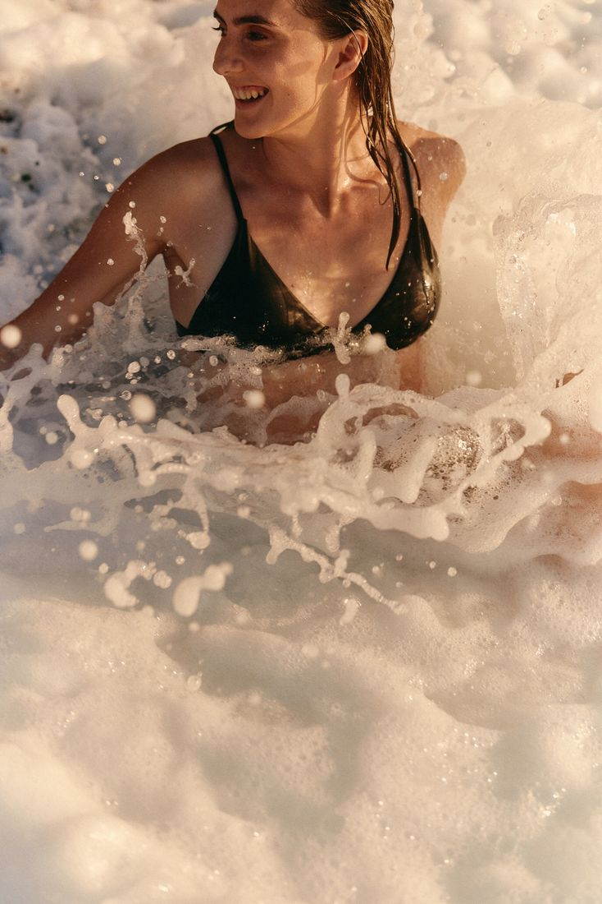
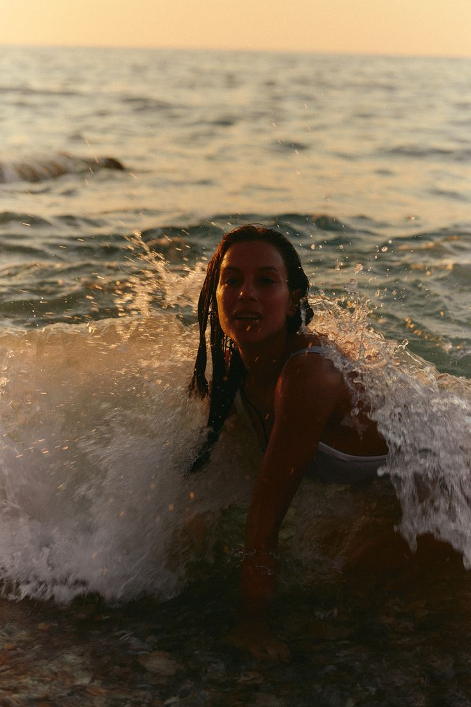
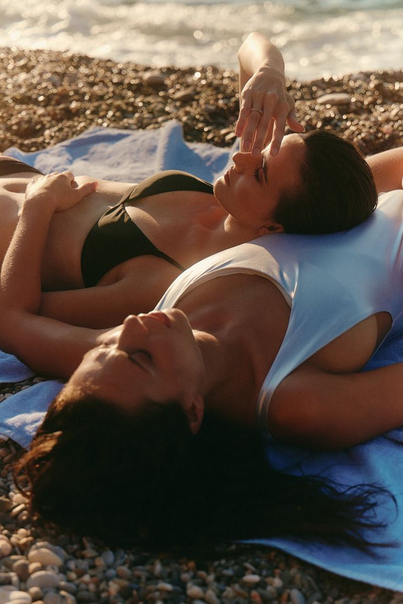
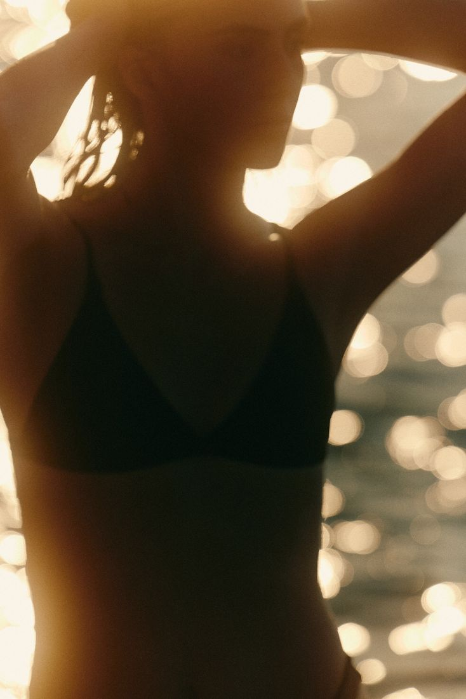
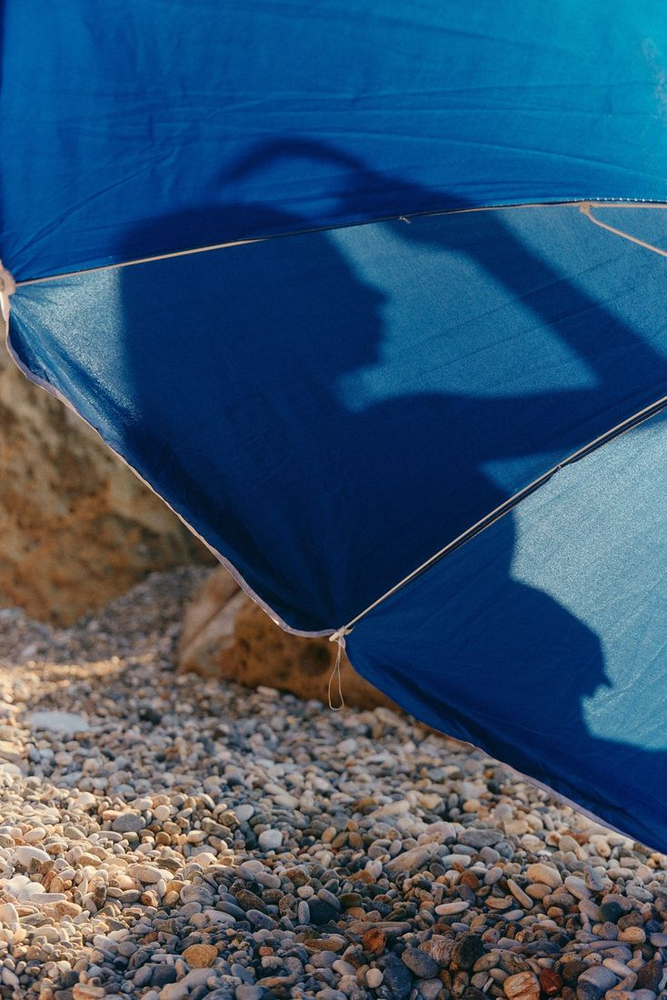
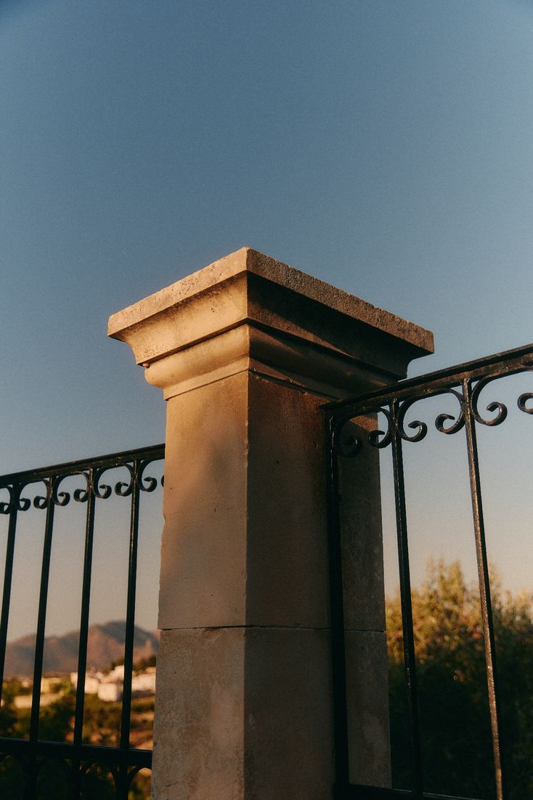
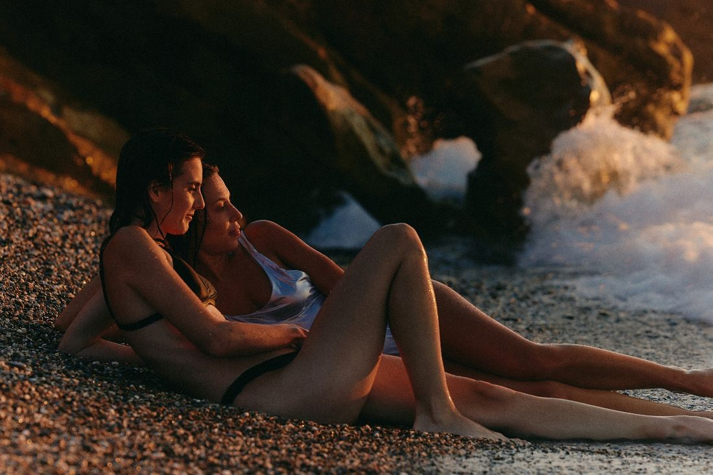

Andrea Robin StudioWorking repository
Sunday ten until six, Monday evening for the rest
This is the working repository for a practice run alongside a full-time career. It holds four projects, the year they run in, and the map of the people and opportunities the practice is oriented toward. It holds the decisions that have already been made, written down so they do not have to be made again.

The shape of the week
Eight hours on Sunday, ten until six, for making. Two to four hours on Monday evening for documentation, correspondence and admin. That is about thirty-five hours a month of studio time and between nine and seventeen for everything else.
Those two blocks are the whole budget. Every decision recorded here was tested against them, and several plans were cut because they did not fit. The capacity exists for two of making, video, and selling admin. It does not exist for three.
The governing principle
One project per area for at least a year. Depth requires boundaries, and a practice that runs alongside a career cannot afford to be spread across five surfaces at once. Anything not currently running is deferred rather than cancelled, and each deferred thing is added only when the one before it has become genuinely easy.
What funds the time
The binding constraint is paid hours rather than audience or talent. Twenty-five thousand dollars in grant money and twenty-five thousand in print sales are not equivalent. The grant returns hours to the practice. The sales consume them.
Ranked by hours returned: grants, institutional commissioning, teaching priced to institutions, then retail. The Atlas holds the funders and prizes that follow from that ranking, alongside the artists the work is in conversation with.
The four projects

01Studies
An hour a piece, one size, one price, released monthly, with part of every sale to Arts Umbrella.
See more
02Teaching
Foundation year at Emily Carr, reconsidered after fifteen years of professional work in learning design.
See more
03Writing
Dear Ordinary: fifty-six weeks of thesis inquiry, mapped as eight constellations rather than a sequence.
See more
04Documentation
Six setups that between them cover every photograph and every minute of footage the practice needs.
See moreTwo frames that hold them

Atlas
The artists the practice is oriented toward, and the grants, prizes and residencies that return hours to it. One map, two layers.
Open the atlas
The Year
Twelve months, each with its own weight. Studies through the spring, teaching in summer, the book completed in November, December kept clear.
See the year
Twenty-nine pages. Paintings, drawings and process posts saved as they were found.
this chapter
Inspiration
The work being looked at while this chapter is being made. Paintings photographed against studio walls, underdrawings and process shots, captions that say what is failing, and a few older things that keep coming back. It is a looking file rather than an argument, kept in the order it was gathered.
Download the deckA companion text list sets out what each practice contributes and what does not transfer: Inspirations, as notes.